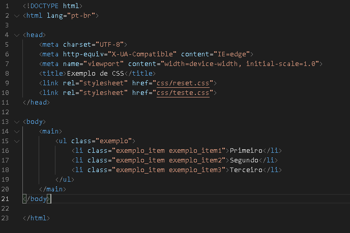
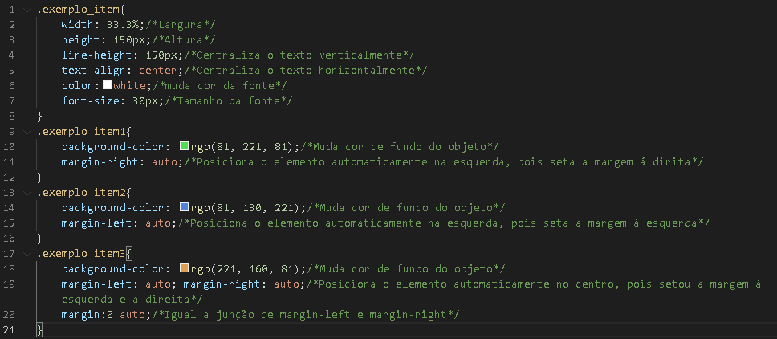
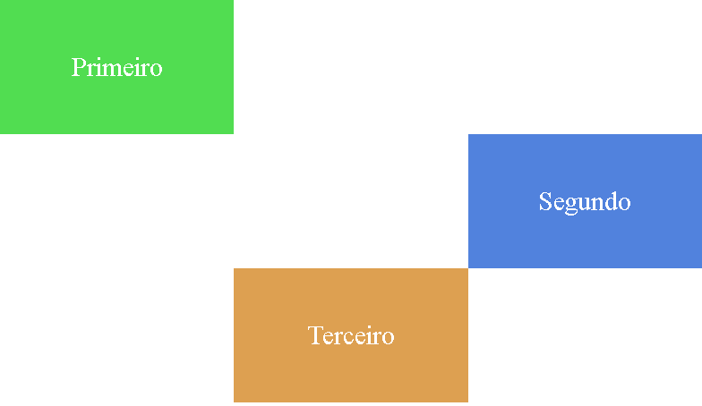
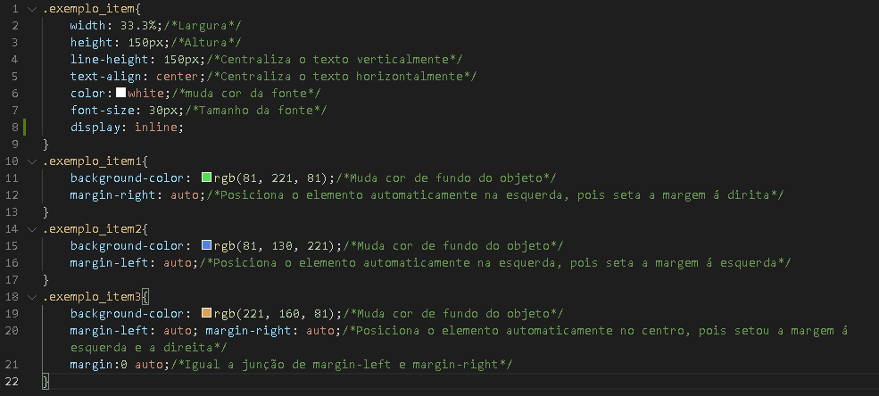
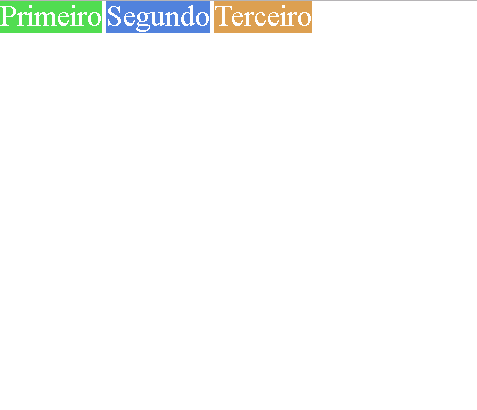
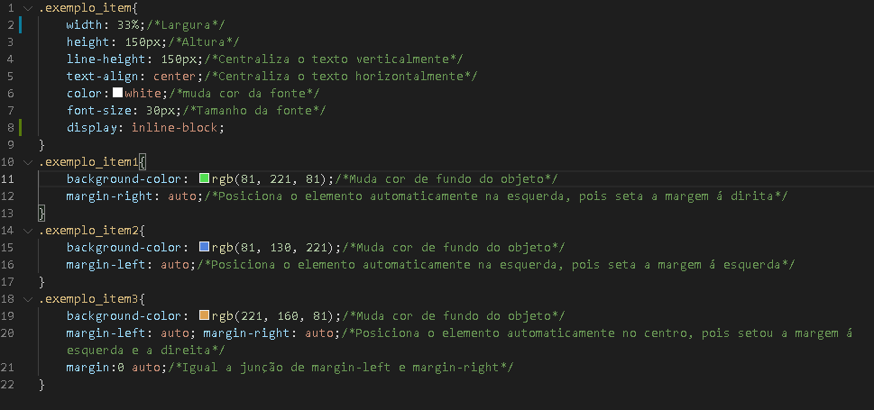
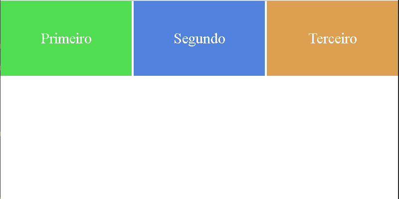
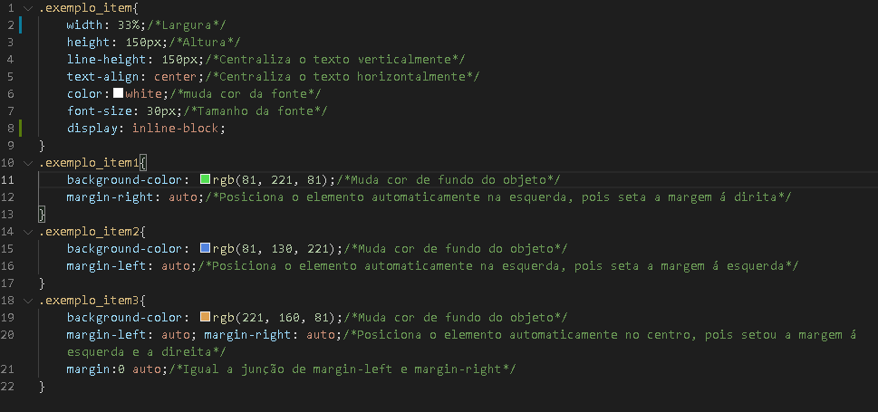
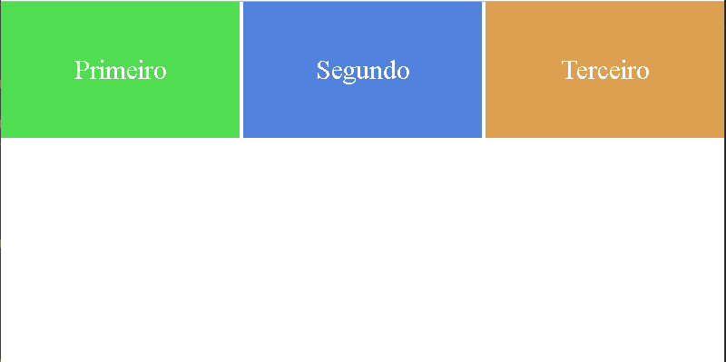

Esse é o display padrão que já é automaticamente usado, se você não seleciona nenhum display.
O :block sempre preencherá 100% da largura total.
Caso você ponha uma largura de 50% no seu objeto ele continuará ocupando 100%, sendo o restante
preenchida em margem.
50% de largura + 50% de margem = 100%.
Nos exemplos abaixo, será mostrado como o :block funciona sendo posicionado a esquerda, direita e
centralizado.
Lembrando que o uso dos margin:auto; só são possíveis, devido ele estar como :block, pois assim a
margem ocupa automaticamente o espaço restante do objeto.



display:block; - FIM
display:inline; -
O :inline faz com que a largura e altura não possam ser alterados e o objeto ganha o tamanho exato de
seu conteúdo.


display:inline; - FIM
display:inline-block; -
O :inline-block faz com que a largura e altura do objeto tenha o tamanho exato que foi feito pelo
programador.

 


